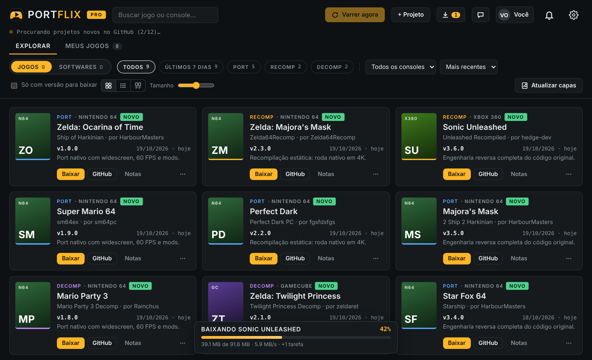
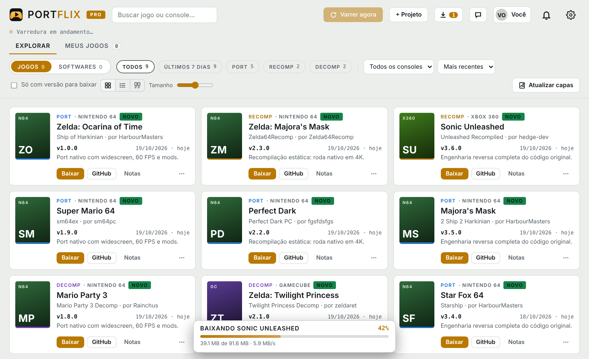
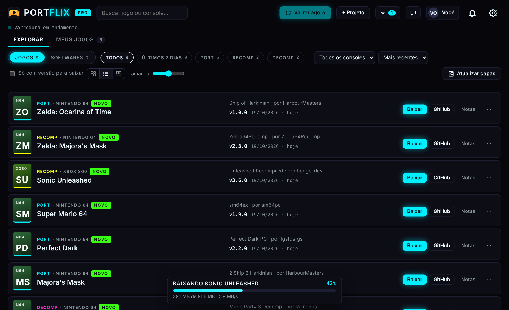

Todos os ports de jogos para PC
num lugar só
O PortFlix acompanha os ports, recompilações e decompilações feitos por fãs e avisa quando sai um port novo. Zelda, Mario, Sonic, Perfect Dark e muito mais rodando nativo no seu PC.
Grátis · Windows 10/11 e Linux (inclui Steam Deck) · todas as versões

Feito pra quem não quer perder nenhum port
Os ports saem espalhados pelo GitHub, Reddit e Discord. O PortFlix junta tudo e te avisa.
Aviso de port novo
Saiu versão nova ou um port inédito? Você recebe a notificação na hora, até com o app minimizado na bandeja.
Catálogo que se atualiza
Varre o GitHub e as listas da comunidade e organiza por console: N64, GameCube, PS2, Xbox 360 e outros.
Capas automáticas
Cada jogo ganha a sua capa. Escolha visualizar em grade, lista ou só capas, no tamanho que preferir.
Meus jogos
Seus ports instalados num lugar só. Abra direto pelo PortFlix, como numa loja de jogos.
Baixar dentro do app PRO
Baixe e extraia com barra de progresso, sem caçar o arquivo certo na página do projeto.
Assistente com IA PRO
Pergunte qual port precisa de qual arquivo, como configurar ou o que saiu de novo.
Do seu jeito
Tema claro ou escuro e, no PRO, as cores vermelho, rosa, roxo, azul e neon.


Preços
O app é o mesmo: abre como Free e vira PRO quando você ativa a chave.
Free
- Catálogo completo de ports
- Avisos de port novo
- Capas e modos de visualização
- Meus jogos
- Temas claro e escuro
- Baixar dentro do app
- Assistente com IA
PRO · 1 PC
- Tudo do Free
- Baixar e extrair dentro do app
- Assistente com IA grátis
- Arquivo do jogo original na pasta certa
- Seguir criadores do GitHub e projetos próprios
- Cores de tema exclusivas
Mercado Pago (Pix, cartão ou boleto) com a chave na hora, ou Pix pelo WhatsApp.
Melhor custoPRO · 2 PCs
- Tudo do Free
- Baixar e extrair dentro do app
- Assistente com IA grátis
- Arquivo do jogo original na pasta certa
- Seguir criadores do GitHub e projetos próprios
- Cores de tema exclusivas
Mercado Pago (Pix, cartão ou boleto) com a chave na hora, ou Pix pelo WhatsApp.
Dúvidas
O que é um port, recomp ou decomp?
São projetos de fãs que fazem jogos de console rodarem nativamente no PC, com widescreen, 60 FPS ou mais e mods. A decomp recria o código-fonte do jogo, a recomp converte o jogo direto para o PC e o port adapta o jogo para rodar sem emulador.
O PortFlix vem com os jogos?
Não. O PortFlix não inclui nem distribui ROMs ou ISOs. Os ports pedem a sua própria cópia original, e cada projeto mostra o autor e o link oficial.
Como recebo a chave do PRO?
Entre em WhatsApp Minha conta com o Google, pague pelo Mercado Pago e a chave aparece na hora, ali mesmo. Ela fica salva na sua conta.
Posso pagar com Pix pelo WhatsApp?
Pode. Chame no WhatsApp (48) 98851-6188 e informe o e-mail que você vai usar no PortFlix. Você recebe a chave Pix e, depois do comprovante, a sua chave do PRO.
Como falo com o suporte?
WhatsApp (48) 98851-6188 ou e-mail hugofernandes30@gmail.com.
Como ativo o PRO?
No PortFlix, clique em Ativar PRO, entre com a mesma conta Google usada na compra e cole a chave.
Funciona no Linux e no Steam Deck?
Sim. Há versões para Linux x86_64 (a maioria dos PCs e o Steam Deck) e ARM64.
Apareceu "O Windows protegeu o computador"
Clique em Mais informações → Executar assim mesmo. O aviso aparece porque o programa é novo e ainda não tem assinatura digital.